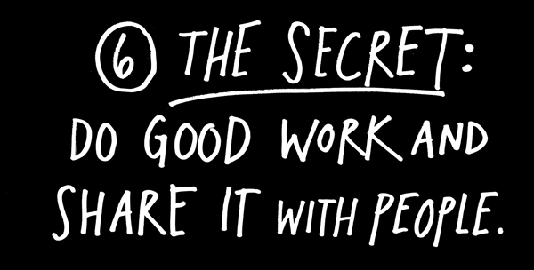
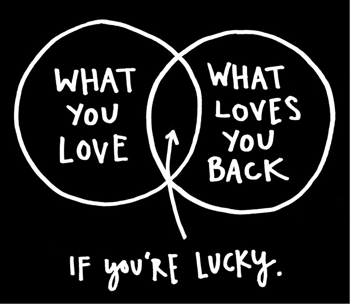
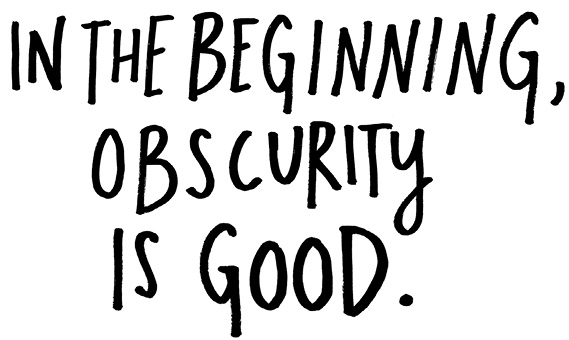
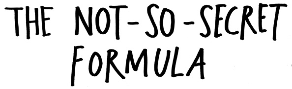
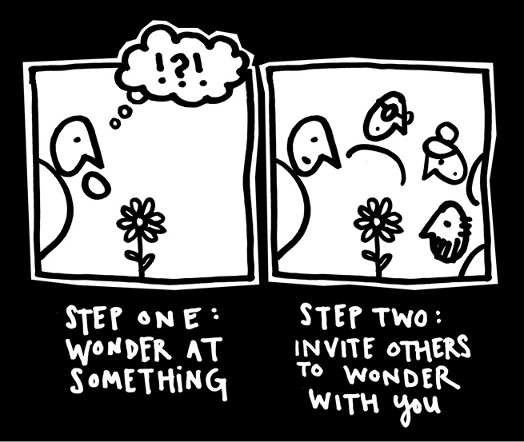
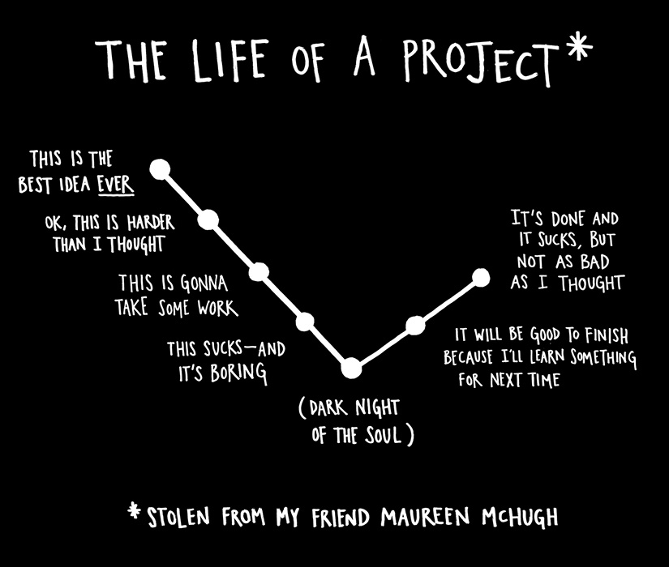
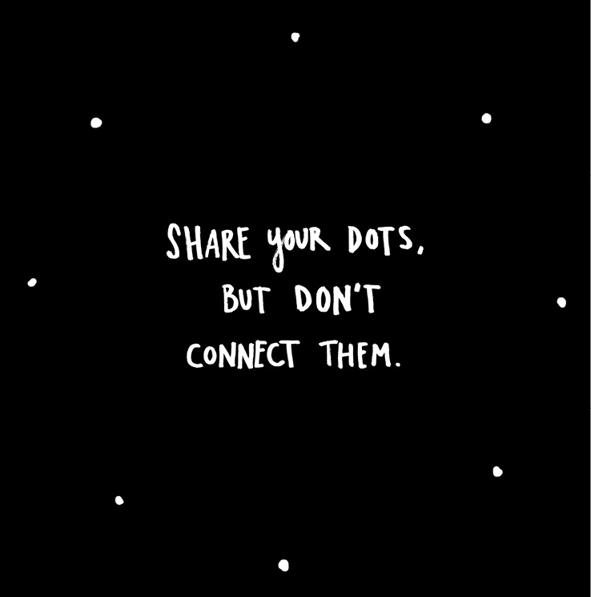

I get a lot of e-mails from young people who ask, “How do I get discovered?”
I sympathize with them. There is a kind of fallout that happens when you leave college. The classroom is a wonderful, if artificial, place: Your professor gets paid to pay attention to your ideas, and your classmates are paying to pay attention to your ideas. Never again in your life will you have such a captive audience.
Soon after, you learn that most of the world doesn’t necessarily care about what you think. It sounds harsh, but it’s true. As the writer Steven Pressfield says, “It’s not that people are mean or cruel, they’re just busy.”
This is actually a good thing, because you want attention only after you’re doing really good work. There’s no pressure when you’re unknown. You can do what you want. Experiment. Do things just for the fun of it. When you’re unknown, there’s nothing to distract you from getting better. No public image to manage. No huge paycheck on the line. No stockholders. No e-mails from your agent. No hangers-on.
You’ll never get that freedom back again once people start paying you attention, and especially not once they start paying you money.
Enjoy your obscurity while it lasts. Use it.

If there was a secret formula for becoming known, I would give it to you. But there’s only one not-so-secret formula that I know: Do good work and share it with people.
It’s a two-step process. Step one, “do good work,” is incredibly hard. There are no shortcuts. Make stuff every day. Know you’re going to suck for a while. Fail. Get better. Step two, “share it with people,” was really hard up until about ten years ago or so. Now, it’s very simple: “Put your stuff on the Internet.”
I tell people this, and then they ask me, “What’s the secret of the Internet?”

Step 1: Wonder at something. Step 2: Invite others to wonder with you. You should wonder at the things nobody else is wondering about. If everybody’s wondering about apples, go wonder about oranges. The more open you are about sharing your passions, the closer people will feel to your work. Artists aren’t magicians. There’s no penalty for revealing your secrets.
Believe it or not, I get a lot of inspiration from people like Bob Ross and Martha Stewart. Remember Bob Ross? The painter on PBS with the ’fro and the happy little trees? Bob Ross taught people how to paint. He gave his secrets away. Martha Stewart teaches you how to make your house and your life awesome. She gives her secrets away. People love it when you give your secrets away, and sometimes, if you’re smart about it, they’ll reward you by buying the things you’re selling.
When you open up your process and invite people in, you learn. I’ve learned so much from the folks who submit poems to my Newspaper Blackout site. I find a lot of things to steal, too. It benefits me as much as it does them.
You don’t put yourself online only because you have something to say—you can put yourself online to find something to say. The Internet can be more than just a resting place to publish your finished ideas—it can also be an incubator for ideas that aren’t fully formed, a birthing center for developing work that you haven’t started yet.
A lot of artists worry that being online will cause them to make less work, but I’ve found that having a presence online is a kick in the pants. Most websites and blogs are set up to show posts in reverse-chronological order—the latest post is the first post that visitors see, so you’re only as good as your last post. This keeps you on your toes, keeps you thinking about what you can post next. Having a container can inspire us to fill it. Whenever I’ve become lost over the years, I just look at my website and ask myself, “What can I fill this with?”


Learn to code. Figure out how to make a website. Figure out blogging. Figure out Twitter and social media and all that other stuff. Find people on the Internet who love the same things as you and connect with them. Share things with them.
You don’t have to share everything—in fact, sometimes it’s much better if you don’t. Show just a little bit of what you’re working on. Share a sketch or a doodle or a snippet. Share a little glimpse of your process. Think about what you have to share that could be of some value to people. Share a handy tip you’ve discovered while working. Or a link to an interesting article. Mention a good book you’re reading.
If you’re worried about giving your secrets away, you can share your dots without connecting them. It’s your finger that has to hit the publish button. You have control over what you share and how much you reveal.
“Don’t worry about people stealing your ideas. If your ideas are any good, you’ll have to ram them down people’s throats.”
—Howard Aiken